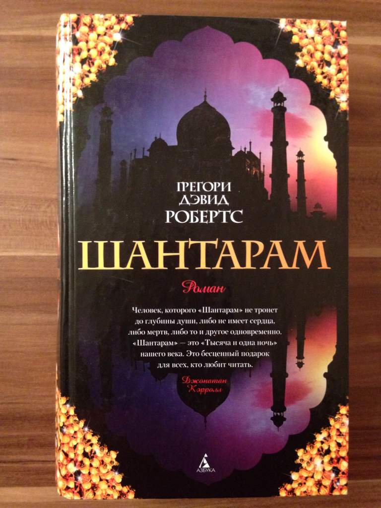

Грегори Дэвид Робертс «Шантарам»
Представляем читателю один из самых поразительных романов начала XXI века (в 2015 году получивший долгожданное продолжение — «Тень горы»). Эта преломленная в художественной форме исповедь человека, который сумел выбраться из бездны и уцелеть, разошлась по миру тиражом четыре миллиона экземпляров (из них полмиллиона — в России) и заслужила восторженные сравнения с произведениями лучших писателей Нового времени, от Мелвилла до Хемингуэя. Подобно автору, герой этого романа много лет скрывался от закона. Лишенный после развода с женой родительских прав, он пристрастился к наркотикам, совершил ряд ограблений и был приговорен австралийским судом к девятнадцати годам заключения. Бежав на второй год из тюрьмы строгого режима, он добрался до Бомбея, где был фальшивомонетчиком и контрабандистом, торговал оружием и участвовал в разборках индийской мафии, а также нашел свою настоящую любовь, чтобы вновь потерять ее, чтобы снова найти…
